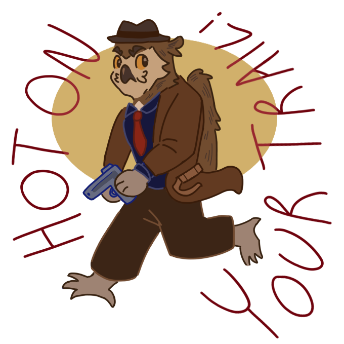
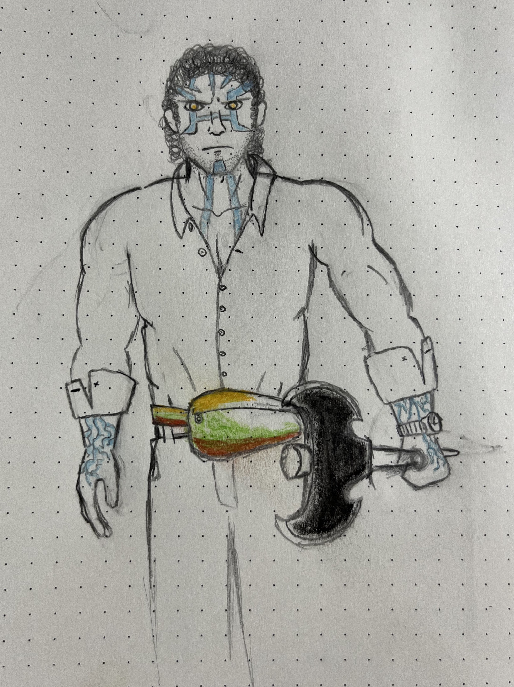

In the city of Ghost-Like-Moon circa 2015, the world stops. Well, at least for detective Demir Thornbite, mail-carrier Shegur Greylock, HR manager at Thrall-Mart Liam Knee Sun, and paladin-librarian Marsha Persnickity Outwalker it does. The mayor has been murdered, and if his death goes unsolved, who will sign their paychecks? But as the party investigates this gruesome scene, they start to unravel a much larger plan at play. A once long dead hero paladin returns to the mortal plane hungry for the powerful draconic magic he once sought alive, and he'll stop at nothing to have even a fraction of it. Will our ordinary city-folk step up to the roles of local heroes to put an end to this terror before it's too late? Will they have what it takes to bring down the horrible undead monster threatening their home? And by the gods will someone please tell them if they're getting paid for this??

Demir was born and raised in Ghost-Like-Moon, and has never known a day of peace as a homicide detective. There’s always scenes to investigate, leads to follow, and piles and piles of paperwork to complete. Not that you’d ever find him complaining, though. If he buries himself in his work, maybe the ache in heart will stop being so awful. He’s the first to the city hall when the mayor is murdered, and what was going to be an open-and-close case quickly unfurls into something much deeper. Accompanied by his friend, the wife of a man he was investigating the disappearance of, and this weird little kobold, Demir learns to be comfortable with the squirming feelings he’s been avoiding by being thrown into the deep end- literally, multiple times. When he’s not being drowned to cure his lycanthropy (long story), Demir opens up to his new, odd family and rediscovers what it means to let people in.

Liam once had dreams of being an adventurer. Back when he was young, hopeful, and had more hair. It’s something he continued to secretly think about during smoke breaks hiding from his crazed necromancer retail supervisor at Thrall-Mart. When he finds himself roped into this mystery about the mayor’s death and magic bones in a far-away mountain,